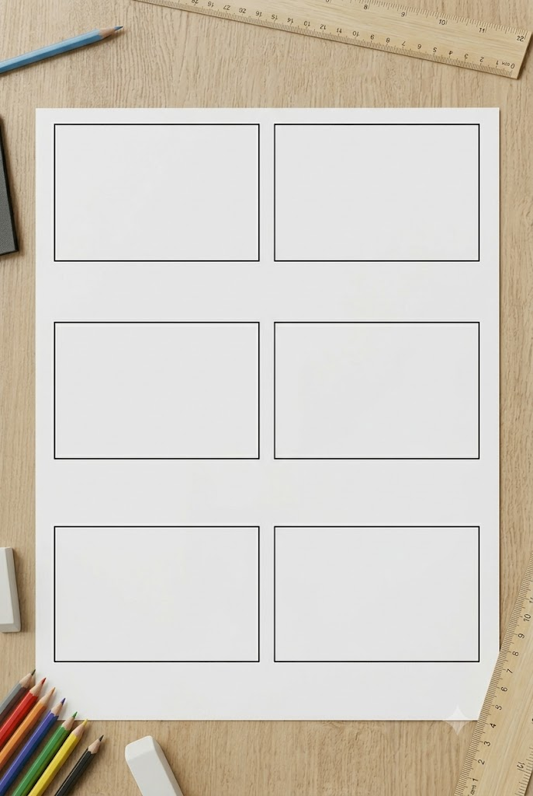

¿Qué es el Storyboard?
Es hora de empezar a plasmar todo lo aprendido en nuestra documentación técnica. Comenzaremos por el Guion Técnico.
Sin embargo, antes de comenzar vamos a ver ¿Qué es el Storyboard?
Es hora de empezar a plasmar todo lo aprendido en nuestra documentación técnica. Comenzaremos por el Guion Técnico.
Sin embargo, antes de comenzar vamos a ver ¿Qué es el Storyboard?
📋 Requisitos del Storyboard
Cada uno de los 6 cuadros de tu storyboard debe ser dibujado que representen los siguientes ítems contenidos en el Guion Técnico:
🛠️ Plantilla de Guion Técnico (Punto de Partida)
Para realizar tus 6 cuadros, debes dividir el espacio de trabajo como quieras siempre teniendo en cuenta que quede ordenado y limpio.

🎨 Criterios de Evaluación y Entrega
💡 Consejo Pro: Recuerda que el cambio de angulación (como el paso del plano 2 en picado al plano 3 en contrapicado) debe notarse claramente en la línea del horizonte de tus dibujos. ¡Buena suerte!
Por cierto, para desbloquear la funcionalidad completa de todas las aplicaciones, habilita la actividad en las aplicaciones de Gemini.
Obra publicada con Licencia Creative Commons Reconocimiento Compartir igual 4.0